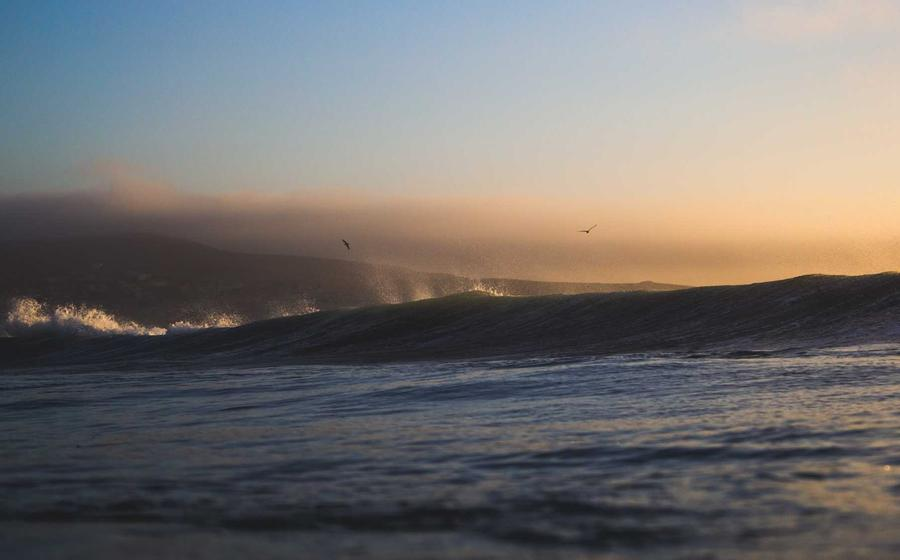
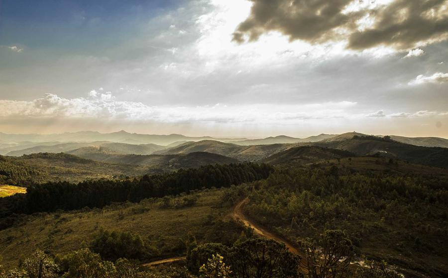
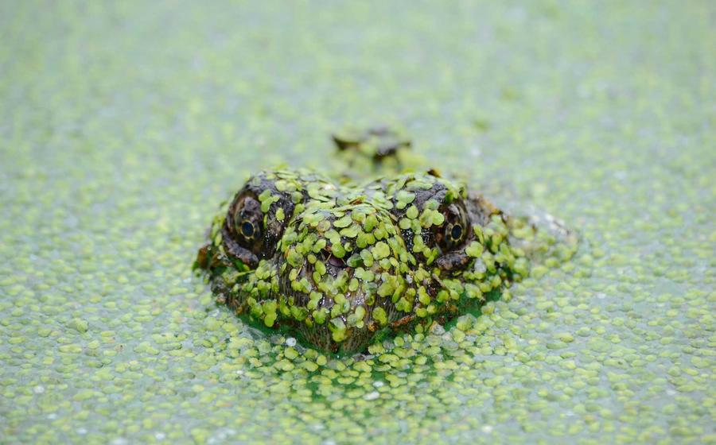
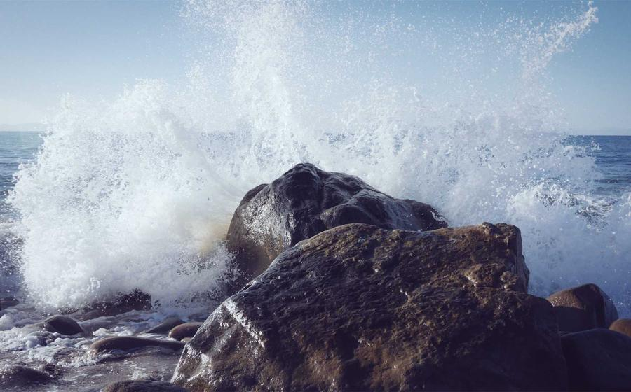
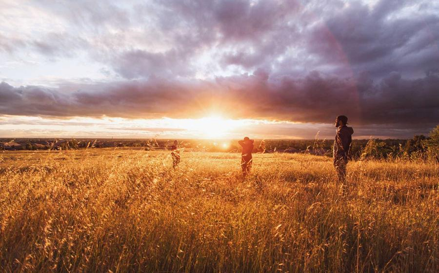

Chcete vědět proč
Společně?
Do komunálních voleb jdeme SPOLEČNĚ jako lidovci, ODS, TOP 09 a STAN. Táhneme za jeden provaz, protože víme, že jen spolupráce přináší výsledky a umožňuje měnit Frýdek-Místek k lepšímu. Za uplynulé období jsme ukázali, že umíme spojit síly a prosazovat projekty, které mají skutečný přínos pro obyvatele města. A taky umíme držet SLOVO.
„Táhneme za jeden provaz!“
Společně v číslech
Čísla, která mluví za nás
4strany v jedné koalici
12neformálních akcí v ulicích
59 tis.obyvatel Frýdku-Místku
2026komunální volby
Náš tým
Zobrazit vše →
Naši kandidáti
Kandidujeme společně
KDU-ČSL
ODS
STAN
TOP 09
Kandidátka 2026
Seznam kandidátů
MS
1. Marcel Sikora
Náměstek primátora
LJ
2. Libor Janečka
Starosta, lídr kandidátky
DK
3. Daniel Kajfoš
Místostarosta pro dopravu
AH
4. Adrian Hutyra
Zastupitel, školství
MK
5. Martin Kleinwächter
Zastupitel, sport
RK
6. Radim Kocourek
Kultura a cestovní ruch
LS
7. Lukáš Slíva
Životní prostředí
JM
8. Jana Mokrošová
Školství a mládež
PN
9. Petra Návratová
Sociální oblast
TB
10. Tomáš Brzobohatý
Rozvoj města
EK
11. Eva Konečná
Lékařka
JP
12. Jiří Pavlík
Podnikatel
VS
13. Veronika Sýkorová
Učitelka ZŠ
PR
14. Pavel Richter
Inženýr
HB
15. Hana Bártová
Sociální pracovnice
OM
16. Ondřej Malý
Projektový manažer
LV
17. Lucie Vašíčková
Architektka
RŠ
18. Roman Šebesta
Hasič
KD
19. Kateřina Dvořáková
Právnička
FU
20. Filip Urban
IT specialista
MK
21. Markéta Kolářová
Ekonomka
DŠ
22. David Štěpán
Trenér mládeže
TH
23. Tereza Holubová
Ředitelka MŠ
VB
24. Vojtěch Beneš
Živnostník
SM
25. Simona Marková
Zdravotní sestra
AP
26. Aleš Pospíšil
Zemědělec
BK
27. Barbora Kratochvílová
Kulturní referentka
MH
28. Michal Horák
Zastupitel
NČ
29. Nikola Černá
Studentka VŠ
JP
30. Jakub Procházka
Stavební technik
DF
31. Denisa Fialová
Marketingová specialistka
PD
32. Patrik Doležal
Sportovní funkcionář
MB
33. Monika Bláhová
Účetní
ZK
34. Zdeněk Krejčí
Řemeslník
KP
35. Klára Pokorná
Pedagožka
JV
36. Josef Vaněk
Senior, dobrovolník
AT
37. Aneta Tichá
Knihovnice
MS
38. Marek Sedláček
Lékař
GR
39. Gabriela Růžičková
Tlumočnice
PB
40. Petr Beránek
Vedoucí spolku
IM
41. Iveta Macháčková
Podnikatelka
LK
42. Ladislav Kučera
Strojní inženýr
SV
43. Sandra Veselá
Fyzioterapeutka
VB
44. Vladimír Beran
Hospodář
AH
45. Adéla Hájková
Grafička
RŠ
46. Robert Šimek
Dopravní expert
LZ
47. Lenka Zemanová
Sociální kurátorka
ŠN
48. Štěpán Novotný
Trenér
DK
49. Dominika Králová
Studentka
AM
50. Antonín Müller
Emeritní zastupitel
Zobrazeno 12 z 50 kandidátů
Naše cesta
Co nás čeká
SL
17. července15.00
Zahrát cornhole
s Lukášem Slívou
Sokolík
SL
25. července14.00
Navštívit farmu
s Liborem Janečkou
Chlebovjanka
SD
6. srpna17.00
Na pivo
s Danielem Kajfošem
Datlovna
SA
13. srpna17.00
Na guláš
s Adrianem Hutyrou
Lískovec
Z města
Všechny novinky →
Aktuality

Nová pravidla parkování v centru
Představili jsme plán, jak zklidnit dopravu a uvolnit místa rezidentům. Změny začnou platit od podzimu.
Číst více
Sešli jsme se s občany na náměstí
Děkujeme za vaše názory a podněty. Posloucháme a zapisujeme.
Číst vícePodpora pro místní školy a školky
Chceme modernizovat učebny a navýšit kapacity tam, kde dnes chybí.
Číst více
Nové workoutové hřiště v Lískovci
Otevřeli jsme moderní hřiště pro všechny generace. Přijďte si zacvičit.
Číst více
Podpořili jsme městské slavnosti
Kultura spojuje. Pomohli jsme s programem i zázemím pro návštěvníky.
Číst více
Bezpečnější přechody u základních škol
Investujeme do osvětlení a zpomalovacích prvků u škol ve městě.
Číst vícePro tuto kategorii zatím nemáme žádné novinky.
Proč společně
Ke stažení